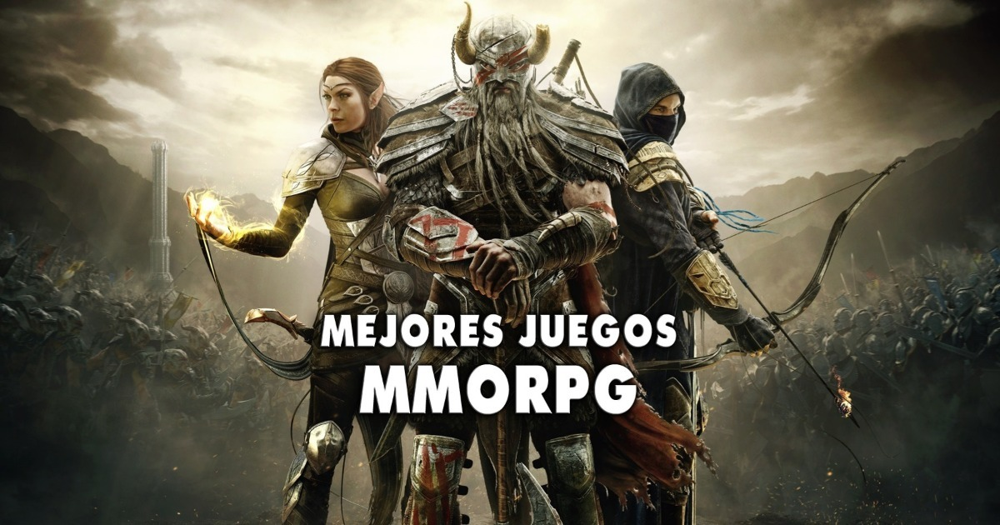
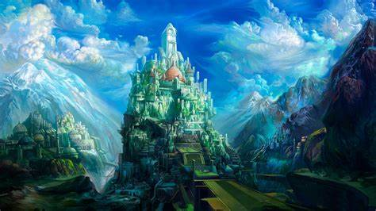

Descubre un Universo Interactivo: Juegos MMO RPG
Los juegos MMO RPG (Massively Multiplayer Online Role-Playing Games) son una fascinante amalgama de aventura y socialización. En este tipo de juegos, los jugadores se sumergen en vastos mundos virtuales, llenos de magia, misterios y desafíos épicos.
En un MMO RPG, tú eres el protagonista de una historia épica que se desarrolla junto a miles de otros jugadores en tiempo real. Elige tu personaje y personaliza su apariencia, habilidades y trayectoria en el juego. Explora extensos mapas, desafía monstruos legendarios y completa misiones que moldearán tu destino.
Pero lo que realmente hace único a un MMO RPG es la interacción con otros jugadores. Forma equipo con amigos o únete a gremios para enfrentar desafíos aún mayores. Comercia, compite y colabora con jugadores de todo el mundo, forjando amistades inolvidables y creando épicas historias en comunidad.
LO SORPRENDENTE DE UN MMO
A medida que avanzas en la trama, desbloqueas nuevas habilidades y obtienes equipo legendario. La cooperación, la estrategia y la exploración son fundamentales para alcanzar la grandeza en estos vastos mundos online.
¿Estás listo para embarcarte en una aventura sin límites y vivir la emoción de un universo compartido? ¡Únete a la comunidad de MMO RPG y forja tu leyenda en estos apasionantes mundos virtuales!
Sección de Video
¡Advertencia!: Sumergirse en un MMO RPG puede ser altamente adictivo y consumir una cantidad considerable de tiempo. ¡Juega con responsabilidad y no olvides mantener un equilibrio en tu vida diaria!